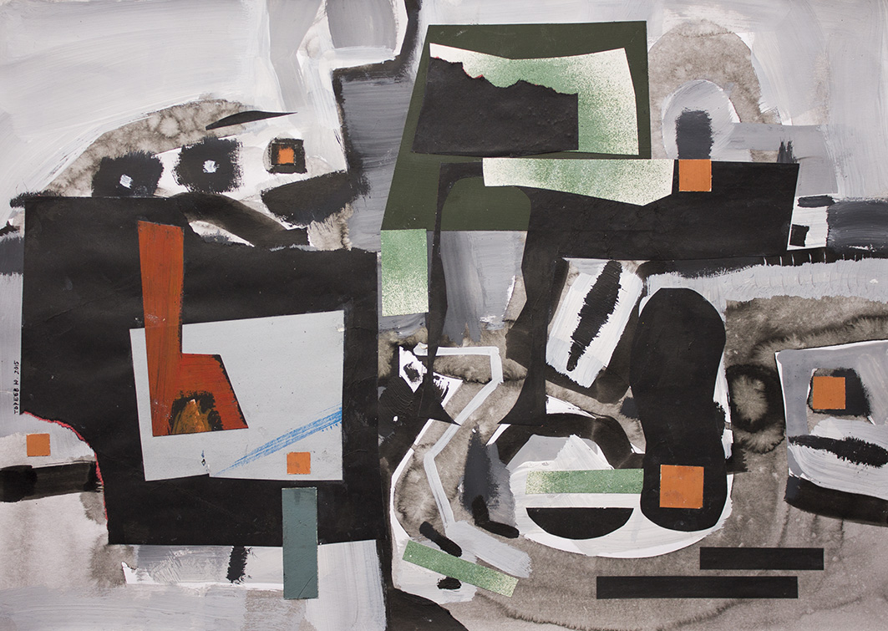
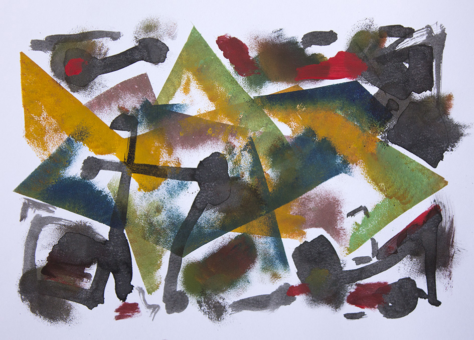

- Я должен однажды сыграть нечто фантастическое
- на акварельных клавишах.
- Пауль Клее (из дневника)
В белом пространстве плавают бесформенные пятна – белые, серые, красноватые…
Что такое бесформенность? Человек – это существо, имеющее чётко очерченную форму. Бесформенность представляется ему недопустимой; она непонятна, а потому и опасна. Всякое пятно неопределённой формы человек стремится наделить именем – путём сравнения с чем-либо известным и понятным.
Вспоминается:
«Плыли по небу тучки / Тучек четыре штучки.
Трое были люди / Четвёртая была верблюдик.
На этом основано гадание «на кофейной гуще». Пятно, образованное гущей, обязательно напоминает какой-либо предмет, вещь, явление…
Не трудно назвать кляксы на рисунке (Живопись 44 2015) именами реальных предметов (слева направо): картошка, гриб, телефонная трубка, стеклянная чашка, мороженое на палочке, клякса. Однако – здоровая психика Художника не может мириться с абсолютной свободой акварельных пятен, с их случайными положениями в пространстве картины (листа). Ведь в подсознании его глубоко укоренено убеждение: полной свободы ни для кого и ни для чего на Земле не существует (да и в космосе также действуют неотменяемые законы).
Поэтому Художник привязывает свои формы-пятна к определённым местам: подвешивает их на верёвочке и прибивает гвоздиком к какому-либо определённому месту в пространстве, или протыкает пятно палочками (вместо гвоздиков), закрепляя его на месте.
Ясно, что в этот момент Юрию хотелось света, воздуха, пространства. Может быть, он устал, или огорчён… не будем гадать. Так или иначе – он инстинктивно размещает красочные пятна поближе к раме картины (на периферии), чтобы они не загромождали пространства.
Но оставить их так без всякой связи нельзя – картина не состоится, она останется просто испачканной бумажкой. Картина – это микрокосм, в котором, как и в любом космосе, должна быть связь всех вещей. И Художник создаёт связующую форму – красную ленту, объединяющую две группы пятен – левую и правую. При этом он деликатно сохраняет белизну центрального пространства, а сама эта красная линия нарисована гармонично: она напоминает чашу и ассоциируется со многими формами живых организмов.
В подсознании Художника прочно укоренились законы классической эстетики: чувство меры, равновесия, масштабности, а также предпочтение органических форм геометрическим. Это обстоятельство (здесь и далее) позволяет работам Ю.Тореева сохранять статус произведений искусства, несмотря на всю их независимость от канонов и свободу самовыражения.
(Живопись 45 2015) На первый взгляд эта работа – продукт почти автоматического действия – нанесения пятен водянистой краски на бумагу, при соблюдении единственного принципа – цветового контраста. Какой-либо сюжет здесь не заметен – это не похоже даже на лоскутный коврик.
Немного присмотревшись, замечаем: здесь господствует число 4, что само по себе уже достойно уважения. Поле картины разделено на 4 неравные части («столбики», убывающие по ширине слева направо в арифметической прогрессии. Число 4 остаётся «системообразующим» и в членении «столбиков» (кроме третьего), причём во втором выдерживается принцип арифметической прогрессии в размерах пятен. Высота блока, состоящего из крупных форм, слегка убывает слева направо, что соответствует убыванию ширины этих форм.
Иными словами, в данной композиции соблюдаются классические принципы – логика числа, пространства и движения, контрасты форм и цвета.
Масштабность основных форм подчёркнута мелкими пятнами у верхнего края картины.
Как видим, здесь свобода кисти Художника разумно (а может быть, подсознательно?) сочетается с классическими принципами композиции, воспринятыми им, как говорится, «с молоком матери» (точнее, с художественным образованием).
Настроение этой вещи – дремотно-расслабленное, не то мечтательное, не то чуть-чуть хмельное, розово-голубое.
«Словно я весенней гулкой ранью
Проскакал на розовом коне»…
(Живопись 24 2015) Картина отличается сложностью и разнообразием форм более или менее черных пятен, причудливостью контурных линий, полным отсутствием того, что в быту называют «красотой». Она воспринимается как откровенный рассказ Художника о переживаниях, связанных с неким невесёлым эпизодом его жизни, или мгновениями тяжёлых раздумий, негативных эмоций…
Всё же здесь, при всей непредсказуемости форм пятен, выполнено классическое правило: фигура и фон. На общем серо-коричневатом фоне бытия возникла тяжёлая веретенообразная масса текущих событий и безрадостных эмоций. Ни начала, ни конца этой чёрной массы мы не видим: только можем угадать, что начало её было давно, а окончание скрыто в далёком будущем. И цвет, и форма здесь как будто говорят:
«Я верю не в непобедимость зла,
А только в неизбежность пораженья» (Георгий Иванов)
(Живопись 40 2015) Её хочется назвать «Печки-лавочки». Здесь угадываются формы из простонародного (крестьянского) быта: устье русской печи, стол, накрытый бело-розовой скатертью, куриный «катух» или собачья будка под беленой крышей, детская люлька и прочие мелочи. Всё это сбито в кучу, набросано кое-как на плоскость.
В этой работе можно усмотреть горький пасквиль на умирающий, уходящий в историю крестьянский быт, вместе с самим носителем его – белорусским народом, которому суждено уступить место фермерам и механизированному капиталистическому производству сельскохозяйственной продукции.
Может быть, эту работу Художник создал под впечатлением жизни в деревне…
(Живопись 20 2014) «Трудовые будни» - так хочется назвать картинку.
Эта вещь создана в нормальном рабочем состоянии, без грусти, тоски и сарказмов. Парад открывают две большие трубы – резервуары плодотворных мыслей и оригинальных идей. Так и хочется бросить туда записочку с необыкновенным проектом или рац-предложением. Так и есть: две головки склонились над трубами – голубая и розовая; они с любопытством заглядывают в голубую и жёлтую бездны труб.
Правее располагаются конструкции из плоскостей, ограниченных прямыми или острыми углами: это трудовые будни, наполненные поисками, исследованиями, размышлениями – они красные, зелёные, синие, желтые, иногда коричневые, или даже бледно-сиреневые. Здесь царит атмосфера активной деятельности, творческого созидания.
Впрочем, неизбежны здесь сомнения и трудности, порой непреодолимые. Они угнездились на заднем плане в виде двух зловещих рогов с острым клювом, готовым прободать всякого неудачника или лентяя (если таковой найдётся в этом дружном коллективе).
Хочется сказать: «Я с теми, кто вышел строить и месть
В сплошной лихорадке буден…»
(Живопись 11 2014) Условное название – «Рабочий стол».
В этой работе ясно ощущается смысл (содержание): она визуализирует душевное состояние Художника во время творческого акта. При первом взгляде возникает «сцена»: на рабочий стол наползают со всех углов чёрные тени – чудовища, грозящие уничтожить труд человека, затуманить его сознание. В композиции выражено напряжённое и тревожное состояние психики Художника – он вынужден спешить, или что-то ему не удаётся, что-то мешает…
Я бы причислила эту работу к стилю «абстрактный реализм».
(Живопись 46 2014) – «Весёлая минутка» (названия – мои. Л.М.)
Не всё же грустить – иногда можно и порадоваться. Над этим весёлым миром шариков и кубиков нависло чёрное небо, но шарики катятся, кубики танцуют – красные, жёлтые, зелёные, голубые, - есть даже один сиреневый треугольник.
В этом мире, с первого взгляда хаотичном, всё же соблюдается закон равновесия: две большие круглые формы уравновешивают друг друга так же, как и наклонные «доски» в верхней части картины. Кроме того, чётко намечена ось симметрии – розово-голубая полоска внизу и синяя вверху.
Ещё одна уступка традиционному диалектическому мышлению: в правой и левой частях композиции находятся детали, умеряющие веселье центральной части: чёрные пятна на жёлтом фоне и сочетание крупного чёрного пятна с тёмно-зелёным фоном. И то, и другое – психологически негативные сочетания.
Всё же – оптимизм в этой работе преобладает.
(Живопись 38 2015) – «Ведьмовский шабаш, или буги-вуги».

Здесь встретились две команды (две партии, две культуры, два стиля) – назовите, как хотите. Не впервые встречаем мы такой тип композиции, где левая и правая половины «сцены» демонстрируют различное отношение к пространству, форме, движению и – к самóй жизни (бытию). В двух половинах картины мы видим противостояние категорий и характеристик:
- Концентрация — рассредоточенность
- Крупная форма — мелкая форма
- Классические пропорции — случайные отношения (сторон прямоугольников)
- Ясность сюжета — множественность вариантов прочтения
- Порядок — хаос
- Техницизм — квази-естественность.
Однако, во избежание полного «отрыва» левой части от правой Художник ввёл объединяющие детали: красные квадратики и красную «печь» (слева).
Обилие чёрного цвета в обеих половинах картины также в необходимой мере объединяет их.
А в общем, мы видим в этой вещи «суету сует», мельтешение мелких забот и малых дел. Такова жизнь.
(Живопись 30 2014) Здесь изображён «механизированный человек». В голове у него конструкции, чертежи, пересечения прямых линий Голова сплющена, взгляд выражает ужас и напряжение. По чёрному небу разбросаны бессмысленные «глазки». Этот мир полностью дегуманизирован и антиэстетичен. Его проблемы неразрешимы.
В этом убеждает большой чёрный кол в центре картины.
(Живопись 39 2015) Отечественный вариант дадаизма – плоские фигуры на чёрном фоне. Кроме того – две водянистые капли – розовая и голубая.
Как почти всегда – левая и правая части картины различны. В левой – полоски и треугольники, в правой – нечто вроде фрагментов стен с проёмами, ведущими в никуда. Над этим убогим пейзажем нависла большая картофелина (мешок, колокол, яйцо – можно продолжить список вариантов).
Картина похожа на городской пейзаж после всемирной атомной войны.
Людей здесь уже нет.
(Живопись 16 2014) В этой композиции кипит бурное веселье – неисчислимое количество цветных пятен различной формы. На переднем плане прочитывается рисунок лодки (катера) с тремя пассажирами; на заднем плане – нечто похожее на деревья и деформированные здания.
Это «весёлый беспорядок», но в центре картины (на пересечении диагоналей) возвышается красное пятно в белой раме (отчасти разрушенной). Оно воспринимается как знак, символизирующий не веселье, а нечто противоположное, в красно-черно-белом цвете. Куда стремится эта лодка? Её пассажиры не знают этого: у них нет глаз, они слепы. Вряд ли это плаванье завершится благополучно.
(Живопись 5 2014) Здесь черно-бело-серая плоскостная структура скомпонована по «типовому» способу: правая и левая половины разделены центральной фигурой – ромбом. Слева формы прямолинейные, справа – криволинейные.
Эстетическое начало принципиально отсутствует.
Бытие представляется Художнику абсолютно некрасивым.
(Живопись 36 2015) – Попытка интерпретации форм из репертуара народного прикладного искусства. Здесь мы видим двух лошадок и птичку, размалёванных под народные орнаменты и обведенных преувеличенно-грубым черным контуром. Зачем этим фигурам заслонять друг друга – неясно. Отметим только – ножка птички стоúт точно на вертикальной оси картины.
Видимо, рука Художника не в силах сотворить идеальный беспорядок.
(Живопись 9 2014) – На плоскость брошены пять угловатых форм типа «птички».

Поверх них расположились длинные черные стержни с головками (наподобие гвоздей), а на свободных участках белого фона – черные пятна непредсказуемой формы (иногда довольно причудливой).
Мы принципиально не можем отказаться от того убеждения, что искусство отображает жизнь. Если это так, то Художник, создавший эту вещь (картину), представляет себе жизнь как неизбывный и слабо-управляемый хаос, в котором неуместно искать цель, порядок, закон и гармонию.
Будем надеяться, что Юрий Тореев найдёт всё это в своей жизни и плодотворной деятельности.
«Искусство было всегда прекрасным зеркалом общественного строя»
(Рихард Вагнер)
ПЕЙЗАЖ
Название этой серии работ условно: здесь мы не увидим привычных элементов этого традиционного жанра искусства – земли, неба, растений и т.д. Аналогии с пейзажем возникают здесь постольку, поскольку в композициях существенную роль играет членение пространства и взаимоотношения его с массами, объёмами, плоскостями…
(Пейзажная живопись 23 2014) В композиции противопоставлены левая и правая половины.
В правой – массивная белая форма, напоминающая производственное здание (без окон и дверей). В левой части картины – изящная динамичная композиция из стержней и плоскостей. Здесь нет ни вертикалей, ни горизонталей (за исключением одной «трубы» на стене белого здания и одного стержня «этажерки» на переднем плане).
Это, по существу, вольная фантазия на тему «плоскости и линии». Художник удостоверил свою непричастность к «пейзажу» (в данном случае), проведя черную линию от ножки «этажерки» к стене «здания» по маршруту «вправо – вверх – влево».
Можно назвать этот сюжет «Фантазия на тему «Производственный пейзаж». Заключим фрагмент словами Поэта:
- «Нам непонятное приятно,
- Необъяснимое нам друг». (А. Введенский)
(Пейзажная живопись 28 2014) Полу- абстрактный пейзаж, напоминающий плотную городскую застройку. Плоскости и стержни – серые на черном фоне.
- Беспросветная картина, ни одного окошка, ни живой души.
- Монотонность и однообразие безрадостных дней.
- Засилье вертикалей и горизонталей. Неподвижность.
- Двумерный мир. Безвыходная ситуация.
- Холод, мрак, жёсткость и жестoкость.
- «Я из страны, товарищ,
- Где нет дорог, ведущих в Рим
- Где в небе дым нерастворим
- И где снежок нетающ» (Лев Лосев)
(Живопись 21 2014) – Композиция напоминает заводской цех с огромным штамповочным станком, который нависает своей мрачной массой, угрожая раздавить всякого, кто приблизится к его тяжёлому корпусу.
Колорит пространства – черно-синий. Человеку здесь не место, он не выдержит этой антигуманной ситуации. «Станок» напоминает профиль великана, угрожающе наклонившегося. Он готов уничтожить всякое живое существо, приблизившееся к нему.
(Пейзажная живопись 8 2014) Это весёлый оранжево-сине-зелёный пейзаж. Мы приятно удивлены: есть чему радоваться! Впрочем… замечаем подозрительное обстоятельство: левая и правая половины пейзажа неодинаковы по рисунку и колориту. Слева – абстрактная композиция из оранжевых (преимущественно) пятен; справа – деревенский пейзаж: несколько хаток с двускатными крышами.
В нашем сознании время движется слева направо, так же, как наше письмо. Таково же движение времени на картине (Пейзажная живопись 8 2014). Слева мы видим место, где когда-то была деревня; справа – остаток от этой деревни, временно сохранившийся, но уже с признаками разрушения. Яркие краски и «весёлый» колорит картины – это голос Природы, обрадованной освобождению от присутствия человеческой культуры, всегда враждебной ей (Природе).
Это грустные мысли – но не только нам они приходят в голову.
Стóит ли скрывать? Всё весёлое и яркое в искусстве (кроме цирка и оперетты) вызывает у нас недоверие и отторжение.
«Для веселия планета наша мало оборудована» - сказал Поэт.
(Пейзажная живопись 47 2014) Композиция этой работы отдалённо напоминает пейзаж, поскольку в ней различаются три пространственных плана – дальний, средний и ближний.
На первом (ближнем) плане воздвигнута массивная черная ограда с воротами, сквозь которые разве что собака пробежит, а человек – вряд ли. Ворота увенчаны массивными черными рогами неравной толщины и причудливых очертаний.
На заднем плане вместо неба видим нагромождение массивных пятен черного и бурого цвета. Между передним и задним планами – безжизненная ледяная пустыня.
Всё вместе могло бы послужить проектом входа в Преисподнюю – но не в Дантов ад, а в более жуткое обиталище для более злобных и могучих преступников ХХ – ХХI веков, угрожающих уничтожением планеты и всего живого.
На этом (условно говоря) пейзаже изображён мир безобразных форм, невыносимых тяжестей и ледяного холода – мир, на воротах которого написано нечто непонятное: то, что невозможно прочесть, и оттого гораздо более страшное, чем «Оставь надежду, всяк сюда входящий».
Боюсь представить себе состояние души Художника, сотворившего этот адский пейзаж.
НАТЮРМОРТ
В настоящее время натюрморт как жанр живописи исчез из репертуара современных белорусских художников. Исчезли также: портрет, жанровые картины, исторические, батальные, архитектурный пейзаж, обнажённая натура… Красноречивый факт: на 5-й Биеннале белорусского искусства были выставлены два натюрморта и один портрет («Садам»).
Все перечисленные жанры живописи исчезли по разным причинам – но что касается портрета и натюрморта – то они обязаны забвением одному и тому же обстоятельству: Человек перестал быть объектом внимания художника; его имя уже не «звучит гордо».
Как следствие, утрачен интерес к миру вещей, окружающих человека. Они утратили индивидуальность, так как в подавляющем большинстве являются продуктами массового производства. Другая причина непопулярности жанров портрета и натюрморта – художественная молодёжь «перекормлена» ими в процессе обучения. Они превратились в «наглядные пособия» для учеников и студентов, то есть утратили качество «содержательности». Для того, чтобы восстановить это качество, нужно обладать способностями выше средних, а это дано не каждому.
В натюрмортах Юрия Тореева всегда есть мысль, актуальная «здесь и теперь», и не только...
(Натюрморт живопись 47 2014) Это, на первый взгляд, «весёлый» натюрморт. Центральное место в нём занимает рюмка на «человеческой» ножке. Вспомнив о «ножках», Юрий Т. изображает справа от рюмки некое подобие туфли на сверх-высоком каблуке. Здесь же поблизости лежит на боку синяя стеклянная вазочка.
На этом предметные ассоциации заканчиваются. Остальные пятна абстрактно-орнаментальны, они служат для заполнения фона картины.
Присмотревшись к этому натюрморту, замечаем, что веселье здесь несколько надрывное и неискреннее. Об этом говорят резкие контрасты черного и белого, небрежность рисунка и грубость жирных контуров всех пятен. Также внушают сомнение две загадочные крупные фигуры: в центре (синяя) и в правом верхнем углу (бело-серо-коричневая). Первая похожа на режуще-колющий инструмент, вторая – не похожа ни на что (и этим она несимпатична).
Отметим также характерное для работ Ю.Т. различие композиций левой и правой частей картины. Я рассматриваю такую асимметрию как несогласованность частей целого, т.е. потенциальную опасность разрушения структуры.
(Натюрморт живопись 2 2014) – Прохладное голубое царство мороженого. Это экспериментальная работа, почти этюд с натуры. Чтобы у зрителя не возникало такое подозрение, Художник поместил в правой части картины абстрактные пятна, не имеющие отношения ни к производству мороженого, ни к его употреблению.
(Натюрморт живопись 12 2014) – Этот натюрморт можно назвать «Торжество кривой линии, или Привет Паулю Клее». В этой композиции последовательно утверждается мысль: живопись – это не копия действительности, а плоскость, покрытая пятнами краски. Художник приложил усилия к тому, чтобы пятна краски на этом «натюрморте» не напоминали реальные вещи. Это ему почти удалось.
Однако, и здесь не обходится без драмы. Пусть эти вещи не имеют названия – это не мешает им вступать в драматические отношения.
- «У животных нет названья.
- Кто им зваться повелел?
- Равномерное страданье –
- Их невидимый удел». (Н. Заболоцкий)
Белая форма (похожая на букву R, лежащую на животе) страдает вдвойне: снизу её сжимает серый «палец», а сверху навалилась черная «гора» (или «шапка» - как хотите). На «палец» наезжает серая червеобразная форма («лужа»), и только тёмно-бурый «лапоть» в нижнем левом углу избежал насилия более мощных существ.
Счастливее всех оказались два черных пятнышка, свободно плавающих по зелёному полю, хотя и здесь их свобода относительна: они расположены на одной вертикали, то есть взаимно связаны.
(Натюрморт живопись 17 2014) – Групповой портрет трёх вещей неизвестного назначения. Они различны по форме и цвету, но связаны друг с другом. Впрочем, связь их похожа больше на вражду, чем на дружбу. Левая фигура язвит правую, а правая – центральную.
Судя по мрачному колориту, здесь совершаются греховные действия.
Сказано ведь: «А Я говорю вам: любúте врагов ваших, благословляйте проклинающих вас, благотворите ненавидящим вас и молuтесь за обижающих вас и гонящих вас» [Мф. 5:44]
(Натюрморт живопись 34 2014) Этот натюрморт более других напоминает картины этого жанра в стиле метафизической живописи Моранди, или реализма ХVII в.
Сочные акварельные пятна похожи на кухонный инвентарь, а расположение их на «холсте» подобно расстановке посуды на кухонной полке.
Картина как будто мирная, но колорит вызывает мрачные предчувствия: большинство предметов покрыто грязными красками, а в центре композиции зловеще светится холодно-малиновое пятно, подчёркивая невзрачность нижележащего слоя посуды.
И почему в этом мире такая теснота? Как говорил Заратустра: «Разве мало в море зелёных островов?» Можно разместиться и посвободнее.
Как видно, теснота в натюрморте – метафора тесноты нашего человеческого мира. (Не оригинально, зато верно).
(Натюрморт живопись 42 2014) – Условное название – «Сантехнические приборы».
По традиции картина разделена на две половины. В левой – три предмета (относительно мелких), в правой – два крупных. Они отдалённо похожи на реальные вещи из нашего быта, но не будем их здесь называть, так как это – не «портреты» вещей, а рассказ о безрадостном их бытии, о мраке, окружающем их. Все они стары, грязноваты, неухожены.
В мире вещей воспроизводится тот же сюжет, что и в мире людей – нет в нём порядка и красоты. Тёмнобагровый с чёрным – ключ к пониманию сюжета. Как сказал Поэт: «Нет повести печальнее на свете…»
(Натюрморт живопись 48 2014) – Назвать эту вещь натюрмортом можно лишь условно – поскольку здесь в верхнем левом углу угадывается намёк на рюмку и верхнюю часть вазы для цветов. Всё остальное – сочные акварельные пятна в сине-коричневой гамме с белыми акцентами. Они покрывают площадь листа без промежутков и без видимой логики, - зато демонстрируют неодинаковое отношение Художника к правой и левой половинам картины, а также удовлетворяют его потребность свободы самовыражения без границ.
(Натюрморт живопись 49 2014) – В этом натюрморте абсолютно доминирует крупная продолговатая тёмно-синяя форма в правой половине картины. Слева к ней примыкает белая полоса. Вместе с синей формой эти пятна прочитываются, как нечто органическое: морда животного, огурец, язык…
В левой половине картины, как обычно – другой сюжет, масштабно и ритмически не связанный с правым. Здесь узнаваема только одна форма – небольшая чашка (стакан), трактованная в духе кубизма. Фон покрыт абстрактными пятнами дисгармонирующих цветов. Можно назвать эту работу: «Нет – красоте и гармонии!»
Если вы скажете, что такое искусство не отображает жизни, я в свою очередь, задам вопрос: а разве мало в нашей жизни безобразия и дисгармонии? Произведения искусства, подобные этому, могут выполнять функцию плакатов, призывающих людей к культуре в быту.
В желанном «светлом будущем» (если оно состоится), подобные произведения могут предостерегать счастливые поколения от повторения былых ошибок. Пусть эти слова наивны, но – DUM SPIRO SPERO.
Л. Миронова,
05.2017